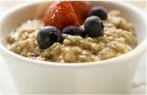
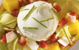

Завтрак дня
-
МЕДОВАЯ ГРАНОЛАИЗ ОВСЯНЫХ ХЛОПЬЕВ
Ингридиенты:Овсяная каша - 200 г,
банан - 1 шт.,
масло - 1 ст.л.Приготовьте овсянку, добавьте нарезанный кусочками 1 средний банан. 1 ст. л. растопленного арахисового масла.
Весь рецепт -
МЕДОВАЯ ГРАНОЛА 2ИЗ ОВСЯНЫХ ХЛОПЬЕВ
Ингридиенты:Овсяная каша - 100 г,
банан - 2 шт.,
масло - 2 ст.л.Приготовьте овсянку, добавьте нарезанный кусочками 1 средний банан. 1 ст. л. растопленного арахисового масла.
Весь рецепт
Похудеть Приготовить быстро Праздничные блюда Все
- 
-
Каша пшеннаяУзнать больше
Возьмите 1 стакан пшена, 500 мл молока, 1 ст. л. сливочного масла, сахар, соль по вкусу. Варить 30 мин на медленном огне, помешивая. В конце варки добавить сливочное масло, соль, сахар. Подавать с джемом, вареньем, медом.
-
Омлет на подстилке из сыра (в духовке)Узнать больше
Возьмите 1 стакан пшена, 500 мл молока, 1 ст. л. сливочного масла, сахар, соль по вкусу. Варить 30 мин на медленном огне, помешивая. В конце варки добавить
Читайте также:
- 12 самых вредных продуктов и их замена. Пожалуй, на всем земном шаре не встретишь такого человека, который бы не любил вкусно покушать.
- Cахарозаменители - в чем их польза и вред? Пожалуй, на всем земном шаре не встретишь такого человека, который бы не любил вкусно покушать.
- Хлеб: есть или не есть? Пожалуй, на всем земном шаре не встретишь такого человека, который бы не любил вкусно покушать.
- Темная сторона кофеина Пожалуй, на всем земном шаре не встретишь такого человека, который бы не любил вкусно покушать.
- Что такое трансжиры? Пожалуй, на всем земном шаре не встретишь такого человека, который бы не любил вкусно покушать.
- Что такое белок? Пожалуй, на всем земном шаре не встретишь такого человека, который бы не любил вкусно покушать.
Статьи о похудении
- Рецепты / Похудеть
-
Низкокалорийные десерты из яблок
Возьмите 1 стакан пшена, 500 мл молока, 1 ст. л. сливочного масла, сахар, соль по вкусу. Варить 30 мин на медленном огне, помешивая. В конце варки добавить сливочное масло, соль, сахар. Подавать с джемом, вареньем, медом.

- Рецепты / Похудеть
-
Низкокалорийные десерты из яблок
Возьмите 1 стакан пшена, 500 мл молока, 1 ст. л. сливочного масла, сахар, соль по вкусу. Варить 30 мин на медленном огне, помешивая. В конце варки добавить сливочное масло, соль, сахар. Подавать с джемом, вареньем, медом.
- 
-
Рецепты / Похудеть
Низкокалорийные десерты из яблок
Возьмите 1 стакан пшена, 500 мл молока, 1 ст. л. сливочного масла, сахар, соль по вкусу. Варить 30 мин на медленном огне, помешивая. В конце варки добавить сливочное масло, соль, сахар. Подавать с джемом, вареньем, медом.
-
Рецепты / Похудеть
Низкокалорийные десерты из яблок
Возьмите 1 стакан пшена, 500 мл молока, 1 ст. л. сливочного масла, сахар, соль по вкусу. Варить 30 мин на медленном огне, помешивая. В конце варки добавить сливочное масло, соль, сахар. Подавать с джемом, вареньем, медом.
-
Рецепты / Похудеть
Низкокалорийные десерты из яблок
Возьмите 1 стакан пшена, 500 мл молока, 1 ст. л. сливочного масла, сахар, соль по вкусу. Варить 30 мин на медленном огне, помешивая. В конце варки добавить сливочное масло, соль, сахар. Подавать с джемом, вареньем, медом.
О компании
Наша компания с 2000 года занимается подбором, продажей и установкой (монтажом) кондиционеров и другого климатического оборудования. Интернет-магазин запущен в 2006 году. Максимум информации, удобные навигация, форма подбора и форма заказа сделают Ваше приобретение быстрым, удобным и приятным. На нашем сайте представлены бытовые, канальные, настенные, кассетные, колонные, потолочные и мобильные кондиционеры,воздухоочистители, увлажнители воздуха, тепловентиляторы,тепловые завесы, а также встраиваемая и бытовая техника. Эта продукция более 15 фирм-производителей, таких как Daikin, Mitsubishi Heavy, Fujitsu , General, Panasonic, McQuay, Hitachi, LG, Cooper Hunter, Kentatsu, Samsung, Olmo, Akira, Arvin и другие.

 Фейсбук
Фейсбук ВКонтакте
ВКонтакте Однокласники
Однокласники Твиттер
Твиттер